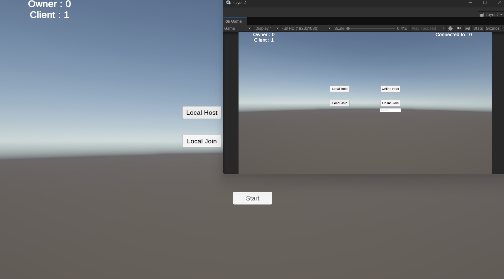
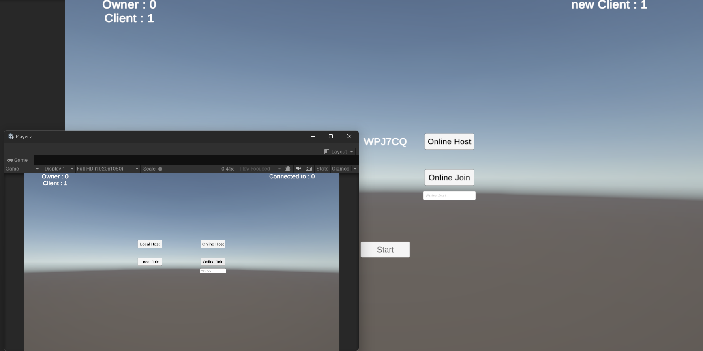
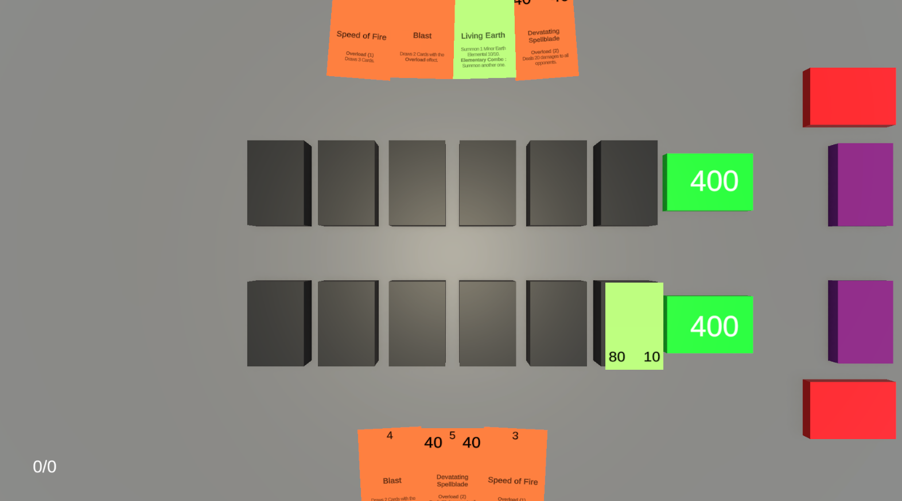
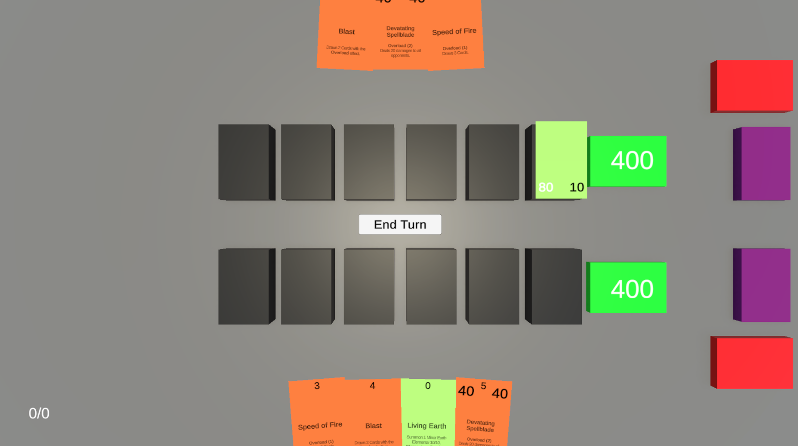
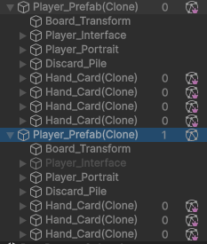
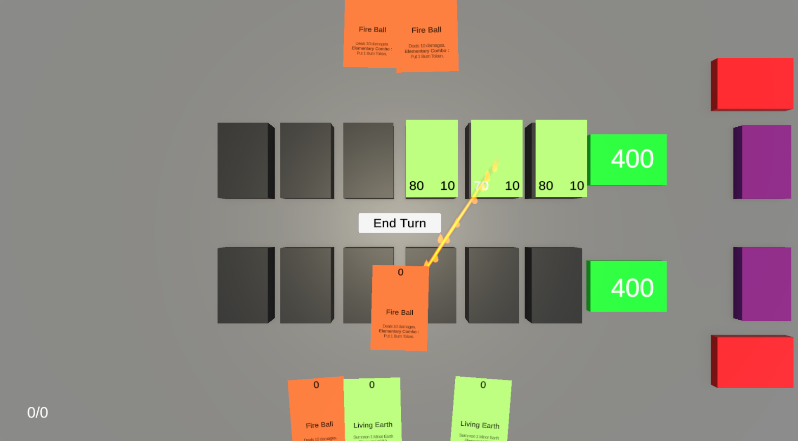

Mainly for debugging
You can connect a client with a server. This requires having the same IP address to make a connection.

For an online connection, I used the Unity Gaming Services that create a connection for other players to join your game.
It will create a code that the client needs to enter in order to join the party.
|
 |
 |
The player (you) will always be at the bottom, your opponent will be at the top.
Players' interactions with the game are local, when it wants to do an action (like play a card), it will launch a ServerRPC.
After any server's actions (like spawning objects, changing cards' position in hand, putting cards on board), it will launch a ClientRPC.
The Client found the elements because anything created by the server is parented to the player who own the object.


Visual Effects are created on the Server side when a Spell/Effect is launched.
It will be initialized on the Client Side after the OnNetworkSpawn() method.
At the end of the effect, the Server takes over and execute the effect. Most of them is changing Network Variables or spawning objects, so it will be replicated to the Client.